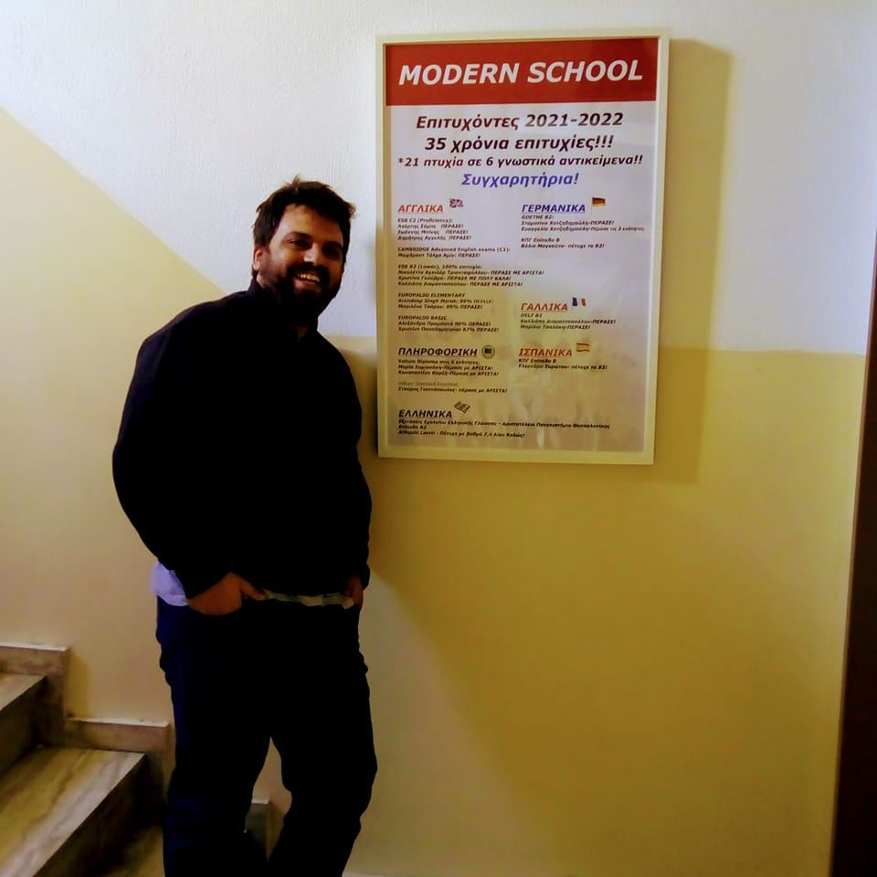

Xenofon Kotsaris - Resume

Summary
Captious English teacher, studious Computer Scientist, freewheeling artist, assiduous Italian learner
Working Experience
- 2022-now: Teaching music at Modern School. Click here to view my Youtube profile!
-
2020-now: Teaching Web Development and the Microsoft Office Package at
Modern School.
-
July 2019-April 2020: Employee at the IT Dpt of Trainose.
Responsibilities included: networking, system administration,
web development, asset management, first level support, pc maintenance
and translations of technical reports.
- 2017-now: Owner of Modern School.
- 2017-now: English Tutor at Modern School.
-
2013-now: Responsible for marketing, advertising and HR at Modern
School.
-
2013-now: Programmer, Web Developer(modernschool.gr), Analyst at Modern
School.
Education
-
Currently attending online MSc in Computer Science provided by the
University of Sunderland.
-
Attending from time to time various online seminars provided by Udemy.
-
Attending from time to time various online seminars provided by
Masterclass.
-
Studied music at the University of Corfu (2013-2017).
-
Graduated from the Department of Informatics of the Athens University of
Economics and Business with GPA 7.38/10 in 2012.
-
Sat the Panhellenic Exams in 2006, averaging 17.193/20. Got accepted to
the Department of Informatics of the Athens University of Economics and
Business.
- Graduated from High School in 2006, averaging 15.3/20
-
Proud holder of the Cambridge Certificate of Proficiency in English
(2006), the ECPE (2006) and the IELTS (2013) with 7.5/9 score.
-
Obtained the CELI 3 (B2) Certificate of Competency in Italian from the
Italian Institute of Athens in 2004.
Other